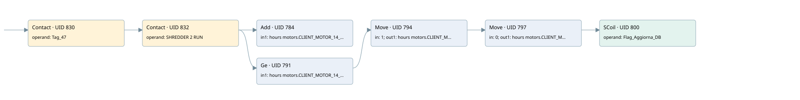

client motor 14
time work motor · 검색 색인 순서 12 · 원본 내부 NID 추정 14
백업 PLF 원본의 2862054 바이트 위치에서 복원한 XML. 검색 문서 1013의 객체 키 161022001212000000000000와 연결했다. 이름 해석 12/12개. 남은 RefId는 상수 또는 미해석 참조다.
연결 구조 다시 그리기
원본 Part/PCon/Wire를 이용한 연결도다. TIA 화면의 래더 배치 또는 실행 결과를 재현한 그림은 아니다. 핀 연결은 아래 표와 원본 XML을 기준으로 읽는다. 노드 위에 마우스를 두면 피연산자 이름을 볼 수 있다.

접점·코일·블록과 피연산자
| Part UID | Gate | Negated 핀 | 연결 피연산자 |
|---|---|---|---|
| 830 | Contact | operand = Tag_47 | |
| 832 | Contact | operand = SHREDDER 2 RUN | |
| 784 | Add | in1 = hours motors.CLIENT_MOTOR_14_MIN; in2 = 1; out = hours motors.CLIENT_MOTOR_14_MIN | |
| 791 | Ge | in1 = hours motors.CLIENT_MOTOR_14_MIN; in2 = 60 | |
| 794 | Move | in = 1; out1 = hours motors.CLIENT_MOTOR_14_HOUR | |
| 797 | Move | in = 0; out1 = hours motors.CLIENT_MOTOR_14_MIN | |
| 800 | SCoil | operand = Flag_Aggiorna_DB |
접점 경로를 펼친 조건식
Contact·O/A·비교기의 원본 연결을 읽기 쉽게 펼친 보조 해석이다. POWER는 전원 레일 시작을 뜻한다. 호출 블록·에지·타이머의 내부 동작과 다중 쓰기 순서는 이 표로 실행 검증하지 않았다. 미해석 핀과 RefId는 원문 연결표에서 확인한다.
| UID | 동작 | 대상 | 원본 접점 경로 | 내용 |
|---|---|---|---|---|
| 794 | Move | hours motors.CLIENT_MOTOR_14_HOUR | ((Tag_47 AND SHREDDER 2 RUN) AND [hours motors.CLIENT_MOTOR_14_MIN >= 60]) | Move 입력 1 |
| 797 | Move | hours motors.CLIENT_MOTOR_14_MIN | Move UID 794.eno (블록 동작 확인) | Move 입력 0 |
| 800 | SCoil | Flag_Aggiorna_DB | Move UID 797.eno (블록 동작 확인) | 조건 성립 시 Set |
원본 배선 연결
| Wire UID | 동일 Wire 연결 끝점 |
|---|---|
| 834 | Powerrail {} ↔ Part 830.in |
| 813 | ORef 801 (Tag_47) ↔ Part 830.operand |
| 831 | Part 830.out ↔ Part 832.in |
| 814 | ORef 802 (SHREDDER 2 RUN) ↔ Part 832.operand |
| 833 | Part 832.out ↔ Part 784.en ↔ Part 791.pre |
| 815 | ORef 803 (hours motors.CLIENT_MOTOR_14_MIN) ↔ Part 784.in1 |
| 816 | ORef 804 (1) ↔ Part 784.in2 |
| 817 | Part 784.out ↔ ORef 805 (hours motors.CLIENT_MOTOR_14_MIN) |
| 818 | ORef 806 (hours motors.CLIENT_MOTOR_14_MIN) ↔ Part 791.in1 |
| 819 | ORef 807 (60) ↔ Part 791.in2 |
| 820 | Part 791.out ↔ Part 794.en |
| 822 | ORef 808 (1) ↔ Part 794.in |
| 824 | Part 794.eno ↔ Part 797.en |
| 823 | Part 794.out1 ↔ ORef 809 (hours motors.CLIENT_MOTOR_14_HOUR) |
| 825 | ORef 810 (0) ↔ Part 797.in |
| 827 | Part 797.eno ↔ Part 800.in |
| 826 | Part 797.out1 ↔ ORef 811 (hours motors.CLIENT_MOTOR_14_MIN) |
| 828 | ORef 812 (Flag_Aggiorna_DB) ↔ Part 800.operand |
식별자 해석 근거 12개
| ORef UID | RefId | 이름 | IdentXmlPart 파일 | 해석 방법 |
|---|---|---|---|---|
| 801 | 1 | Tag_47 | 0613-IdentXmlPart.xml | UID/RID + search-text + NID agreement |
| 802 | 86 | SHREDDER 2 RUN | 0613-IdentXmlPart.xml | UID/RID + search-text + NID agreement |
| 803 | 88 | hours motors.CLIENT_MOTOR_14_MIN | 0615-IdentXmlPart.xml | UID/RID + search-text + NID agreement |
| 804 | 7 | 1 | 0616-IdentXmlPart.xml | literal candidate: UID/RID/NID + nearby named declarations + search-text agreement |
| 805 | 88 | hours motors.CLIENT_MOTOR_14_MIN | 0615-IdentXmlPart.xml | UID/RID + search-text + NID agreement |
| 806 | 88 | hours motors.CLIENT_MOTOR_14_MIN | 0615-IdentXmlPart.xml | UID/RID + search-text + NID agreement |
| 807 | 8 | 60 | 0616-IdentXmlPart.xml | literal candidate: UID/RID/NID + nearby named declarations + search-text agreement |
| 808 | 7 | 1 | 0616-IdentXmlPart.xml | literal candidate: UID/RID/NID + nearby named declarations + search-text agreement |
| 809 | 90 | hours motors.CLIENT_MOTOR_14_HOUR | 0615-IdentXmlPart.xml | UID/RID + search-text + NID agreement |
| 810 | 12 | 0 | 0616-IdentXmlPart.xml | literal candidate: UID/RID/NID + nearby named declarations + search-text agreement |
| 811 | 88 | hours motors.CLIENT_MOTOR_14_MIN | 0615-IdentXmlPart.xml | UID/RID + search-text + NID agreement |
| 812 | 13 | Flag_Aggiorna_DB | 0613-IdentXmlPart.xml | UID/RID + search-text + NID agreement |
검색 코드 보조 자료
참조 명칭을 찾기 위한 자료이며 실행 순서나 AND/OR 관계는 위 연결표로 확인한다.
"tag_47" "shredder 2 run" add "hours motors".client_motor_14_min 1 "hours motors".client_motor_14_min 60 move 1 move 0 "flag_aggiorna_db" "hours motors".client_motor_14_hour "hours motors".client_motor_14_min "hours motors".client_motor_14_min